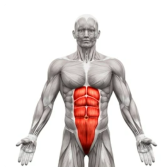
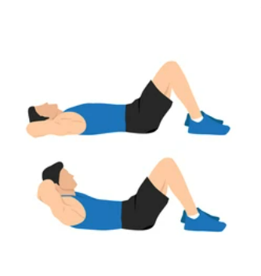
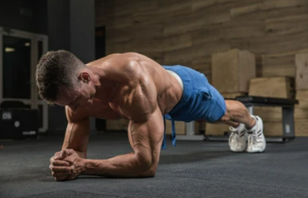
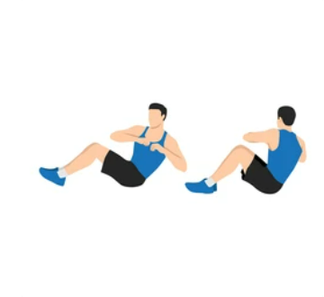
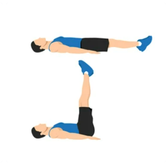
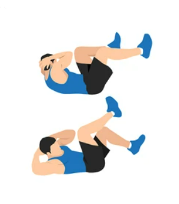

Trebušne mišice
Treniranje trebušnih mišic je pomembno, saj prinaša številne koristi za vaše zdravje in telesno kondicijo. Močni trebušni mišici ne samo, da izboljšujejo videz trebuha, ampak tudi igrajo ključno vlogo pri ohranjanju stabilnosti trupa in podpiranju pravilne telesne drže.
- Trebušne mišice, kot so rektus abdominis, zunanje in notranje poševne mišice ter popkovina mišica, skupaj tvorijo "steznik" ali "korzet" mišic, ki ohranja stabilnost trupa. S močnimi trebušnimi mišicami lahko izboljšate telesno držo, zmanjšate tveganje za poškodbe hrbta in povečate učinkovitost pri drugih vadbah.

- Močne trebušne mišice podpirajo pravilno delovanje trupa pri vsakodnevnih aktivnostih, kot so dviganje predmetov, upogibanje, obračanje telesa, držanje telesa v ravnotežju itd. Z dobro razvito mišično močjo v trebuhu lahko opravljate te aktivnosti z manj napora in zmanjšate tveganje za poškodbe.
- Močne trebušne mišice so ključne pri številnih športnih disciplinah, kot so tek, skakanje, plavanje, tenis, golf in mnoge druge. S povečano močjo in stabilnostjo v trebuhu lahko izboljšate izvedbo teh gibanj ter povečate moč in učinkovitost svojega telesa pri športnih aktivnostih.
Treniranje trebušnih mišic vam lahko pomaga doseči bolj izklesan in definiran trebuh. Čeprav ni mogoče lokalno kuriti maščob samo na trebuhu, lahko z močnim treningom trebušnih mišic povečate mišično maso in prispevate k izboljšanju videza vašega trupa.
Zvijanje(Crunches)
Rektus abdominis (srednji del trebuha)

Lezite na hrbet s pokrčenimi koleni in stopali na tleh. Položite roke za glavo ali jih prekrižajte na prsih. S kontrakcijo trebušnih mišic dvignite zgornji del telesa proti kolenom, pri čemer ohranjate spodnji del hrbta na tleh. Po kratki pavzi počasi spustite telo nazaj na tla. Osredotočite se na napetost trebušnih mišic med izvajanjem. Ponovite za želeno število ponovitev.
Deska(Plank)
Transverzalne trebušne mišice (mišice, ki obdajajo trebušno votlino) ter mišice hrbta, ramenskega obroča in zadnjice

Položite se na tla s podporo na podlahti in prstih nog. Telesno težo dvignite v ravno linijo od glave do pet. Ohranjajte aktivne trebušne mišice, izogibajte se visenju ali prekomernemu pripogibanju telesa. Držite to pozicijo za določen čas (npr. 30 sekund do 1 minuto) in postopoma povečujte čas držanja.
Ruski zasuki(Russian Twists)
Zunanje in notranje poševne trebušne mišice

Usedite se na tla s pokrčenimi koleni in stopali na tleh. Nagnite se nazaj, da tvorite kot približno 45 stopinj med zgornjim in spodnjim delom telesa. Dvignite noge od tal in roke zložite pred prsi. Nato zavrtite trup v eno smer, prečkajte roke in se dotaknite tal na obeh straneh telesa. Vrnite se v začetni položaj in nato zavrtite trup v nasprotno smer. Nadaljujte izmenično zavijanje v eno in drugo smer. Ponovite za želeno število ponovitev.
PDvigovanje nog(Leg Raises)
Spodnji del trebuha, rektus abdominis

Lezite na hrbet s pokrčenimi koleni. Dvignite noge od tal, tako da so noge usmerjene navpično proti stropu. Z napetimi trebušnimi mišicami počasi spustite noge proti tleh, ne da bi se dotaknile tal. Nato dvignite noge nazaj v začetni položaj. Osredotočite se na nadzorovano gibanje in izogibajte se uporabi moči nog. Ponovite za želeno število ponovitev.
Kolesarski zasuki(Bicycle Crunches )
Rektus abdominis, zunanje in notranje poševne trebušne mišice

Lezite na hrbet s pokrčenimi koleni in rokami za glavo. Dvignite ramenski del telesa s tal in hkrati iztegnite eno nogo, da se koleno približa nasprotnemu komolcu. Nato zamenjajte strani, tako da iztegnete drugo nogo in približate nasprotni komolec. Nadaljujte izmenično gibanje, kot da bi poganjali kolo. Osredotočite se na rotacijo trupa in napetost trebušnih mišic med gibanjem. Ponovite za želeno število ponovitev.
Pri začetku novega vadbenega programa je vedno priporočljivo, da se posvetujete s strokovnjakom ali osebnim trenerjem, ki vam bo pomagal prilagoditi vadbo vašim individualnim potrebam in ciljem!
 Močno Telo
Močno Telo